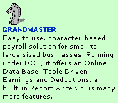
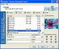
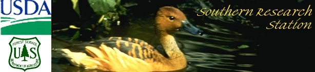

- service -
|  |
Please group all sections of the article in one file; do not use separate files for tables, references, and so forth. . Journal of Service Research Available Electronically. Journal of Service Research Sponsored by The Center for E-Service, University of Maryland Editor Roland T Rust University of Maryland, College Park, USA . 00 FAX Order Form for this JournalTop of Page About the JournalThe mission of the Journal of Service Research is to be the leading outlet for the best research in service. |
|  |
. Proceedings of the eleventh biennial southern silvicultural research conference. Department of Agriculture, Forest Service, Southern Research Station. Research Work Units and Programs - Where are our labs and offices located. Directory of Research Scientists - Learn about our scientists and their work. |
|  |
CRS does not itself provide these documents to the general public. NCSE is committed to expanding, maintaining and updating its database of reports, making them available and searchable for the public. The National Council for Science and the Environment (NCSE) has made these reports available to the public at large, but the Congressional Research Service is not affiliated with the NCSE or the National Library for the Environment (NLE). This web site is not endorsed by or associated with the Congressional Research Service. The material contained in the CRS reports does not necessarily express the views of NCSE, its supporters, or sponsors. |
It is tax exempt under Section 501(c)(3) of the Internal Revenue Code. All contributions to the Foundation are tax deductible as charitable contributions and it may receive grants from public and private foundations. Public Service Research Foundation 320 D Maple Avenue East Vienna, Virginia 22180 Please contact us for more information about the Foundation's programs. ..
A site I really like: http://www.compinfo-center.com/compinfo/companies.nsf/countrylist?OpenForm&Type=Service+Provider